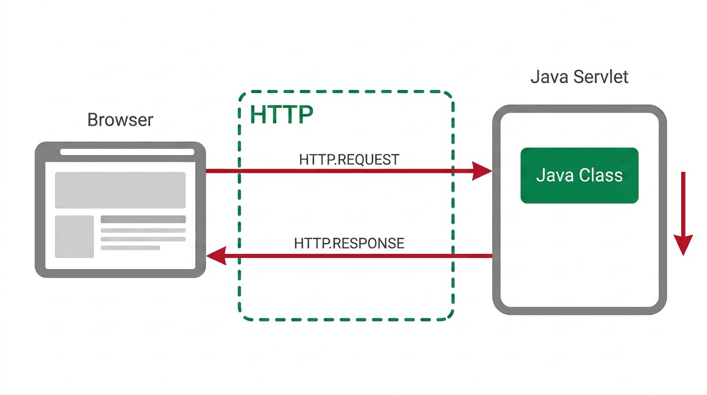
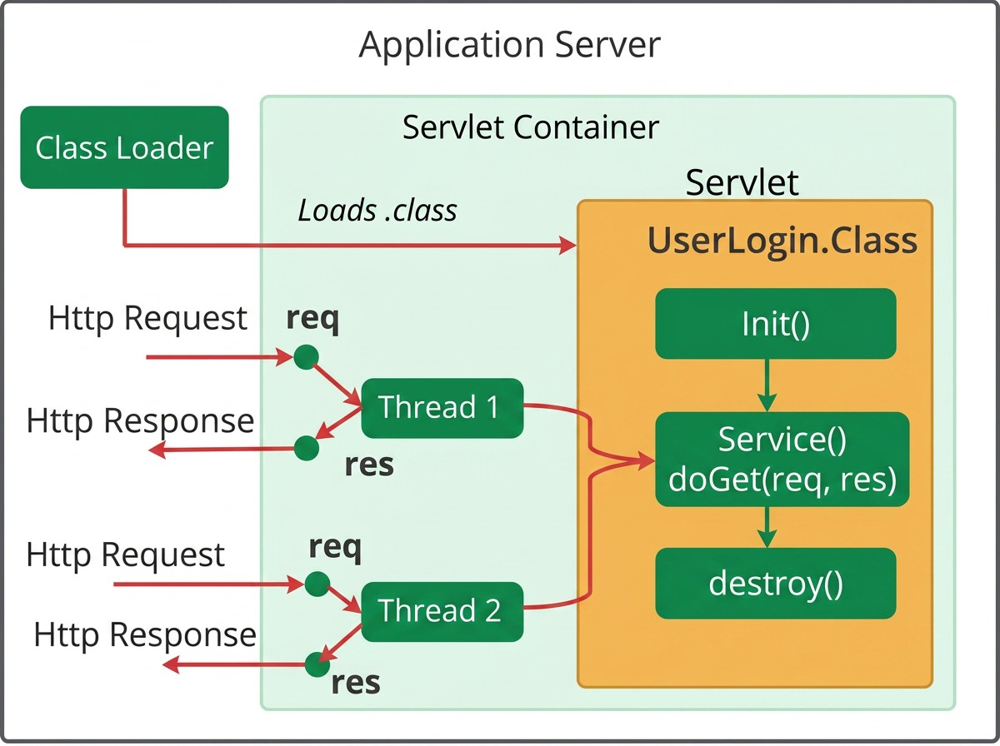
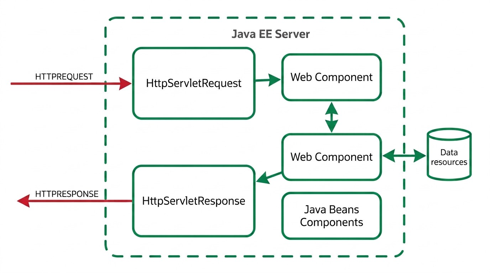

4 Java EE and Servlet Fundamentals
4.1 The Jakarta EE Platform
With the Frontend built (Chapter 2) and the Middleware detailed (Chapter 3), what remains is the third piece identified in Chapter 1: the Backend, which actually receives HTTP requests and answers them. That is the subject of this chapter and the ones that follow.
Jakarta EE (previously known as Java EE, until it was renamed in 2019) is a platform that provides a ready-to-use set of services and APIs to deal with the problems common to any Web application (see Chapter 1), freeing developers to focus on the application’s business logic.
The platform rests on the Java language and the Java Virtual Machine (JVM), which means any component written for Jakarta EE benefits from the portability and automatic memory management already familiar from the language.
4.2 Layered Architecture
The Jakarta EE platform organises an application according to a model distributed across several layers (tiers), each with a well-defined role and typically installed on a different machine:
| Tier | Where it resides | Typical components |
|---|---|---|
| Client Tier | Client machine | Web pages (browser), client applications |
| Web Tier | Jakarta EE server | Servlets, JavaServer Pages, Web Services |
| Business Tier | Jakarta EE server | Enterprise Beans (business logic) |
| EIS Tier (Enterprise Information System) | Database server | Databases, enterprise information systems |
This layering allows each component to evolve relatively independently of the others: changing the database does not require rewriting the business logic, and changing the client interface does not require changing the server.

Apache Tomcat, used throughout this course, is a Servlet Container: it implements only the Web Tier (Servlets, JSP). It does not include support for Enterprise Beans nor for the Business Tier itself, unlike a complete Jakarta EE application server (for example, WildFly, WebSphere or GlassFish). In practice, this means that the business logic which, in the formal architecture, would belong to the Business Tier, is implemented here directly in plain Java classes, rather than in Enterprise Beans.
4.3 Why Servlets?
Implementing, from scratch, a Java program capable of answering HTTP requests would require solving, on its own, a set of problems common to any Web server: parsing the incoming HTTP message, managing several connections at once (each in its own thread), controlling the life cycle of the in-memory instances, and packaging all of this into a format that an application server knows how to install and start.
A Servlet is a Java class that runs inside a Servlet Container (for example, Apache Tomcat) and automatically receives all of this work already done:
- Parsing of the HTTP request
- Thread management, one per request
- Management of the Servlet’s own life cycle
- Its own deployment model, packaged in a
.warfile (Web Application Archive)
The Servlet Container corresponds, in the layered architecture presented above, to the Web Tier: it is there that Servlets reside, between the client and the business layer.

4.4 The Life Cycle of a Servlet
When a request is routed to a Servlet, the container always follows the same sequence (see Figure 4.3):
- If no instance of that Servlet yet exists in memory, the container loads the class, creates an instance, and calls the
init()method - For each request received, the container invokes the
service()method, which dispatches todoGet(),doPost(), or another method depending on the HTTP verb used, passing it therequestandresponseobjects - If the container needs to remove the Servlet (for example, when shutting down the server), it invokes the
destroy()method
An important detail follows from this: there is a single instance of each Servlet in memory, even if N clients are using the same service at once. Each request is handled by a different thread, but all of those threads share the same instance. In practice, this means:
Never store data specific to one request in the Servlet’s instance attributes: since the instance is shared by all threads, one request can read or overwrite data belonging to another request in progress. Local variables, declared inside doGet() or doPost(), are safe, because each thread has its own copy.

service() on that same shared instance.
4.5 From the HTTP Message to the Java Method
A Servlet is bound to a URL through the @WebServlet annotation, which maps a path to the class that will handle it:
A client request to http://localhost:8080/country is thus routed to the CountryServlet class. The container automatically builds, from the elements of the incoming HTTP message (see Chapter 3 (cap03.qmd)), the request object; the complementary response object is what the Servlet uses to build the outgoing message. The elements of each message correspond to concrete methods of these two objects:
| HTTP element | Java access | When it is used |
|---|---|---|
| Request headers | request.getHeader(name) |
Always, regardless of the type of request |
Parameters (GET query string, or application/x-www-form-urlencoded body of a POST) |
request.getParameter(name) |
Traditional HTML forms (see Chapter 2), in a presentation-oriented application |
| Raw request body (typically JSON) | request.getInputStream() |
REST Web services (see Chapter 7): the body does not arrive in application/x-www-form-urlencoded format, so getParameter() does not parse it, and the JSON must be read and parsed manually |
| Writing the response | response.getWriter() or response.getOutputStream() |
Always, regardless of the type of response |
protected void doGet(HttpServletRequest request, HttpServletResponse response) {
String countryCode = request.getParameter("countrycode");
// ...
}
HttpServletRequest, is processed by the Web component (the Servlet), which may call another servlet, or query data resources, and the response goes out wrapped in an HttpServletResponse.
4.6 Content-Type and the Shape of the Response
Before writing anything to the response, it is essential to set its Content-Type: this header tells the client how to interpret the bytes that follow, whether as an HTML page or as JSON data.
For a presentation-oriented application:
response.setContentType("text/html");
PrintWriter out = response.getWriter();
out.println("<html><body>");
out.println("<h1>Hello João</h1>");
out.println("</body></html>");For a service-oriented application:
response.setContentType("application/json");
PrintWriter out = response.getWriter();
out.print("{\"name\":\"João\",\"role\":\"admin\"}");In the absence of a dedicated JSON-generation library, the most direct approach is to build the String by hand, taking care to escape internal quotes with \":
String jsonResponse = "{\"country\": \"Portugal\", \"capital\": \"Lisboa\", \"ccode\": \"PT\"}";
out.print(jsonResponse);
out.flush();To set the response’s status code (see Chapter 3), the HttpServletResponse class provides a constant for each code, avoiding “magic” numbers directly in the code:
| HTTP code | Java constant |
|---|---|
200 |
HttpServletResponse.SC_OK |
201 |
HttpServletResponse.SC_CREATED |
400 |
HttpServletResponse.SC_BAD_REQUEST |
403 |
HttpServletResponse.SC_FORBIDDEN |
404 |
HttpServletResponse.SC_NOT_FOUND |
500 |
HttpServletResponse.SC_INTERNAL_SERVER_ERROR |
4.7 A First Servlet: “World Capitals”
Applying what has been presented, a first Servlet can serve as a simple health check for the API:
@WebServlet("/status")
public class StatusServlet extends HttpServlet {
protected void doGet(HttpServletRequest request, HttpServletResponse response)
throws ServletException, IOException {
response.setContentType("text/plain");
PrintWriter out = response.getWriter();
out.print("OK");
}
}A second one, already returning fixed data in JSON format, is the first step of the “World Capitals” application used throughout this course:
@WebServlet("/countrycapital")
public class CountryCapitalServlet extends HttpServlet {
protected void doGet(HttpServletRequest request, HttpServletResponse response)
throws ServletException, IOException {
response.setContentType("application/json");
PrintWriter out = response.getWriter();
String jsonResponse = "{\"country\": \"Portugal\", \"capital\": \"Lisboa\", \"ccode\": \"PT\"}";
out.print(jsonResponse);
out.flush();
}
}This Servlet always returns the same country, with the data fixed directly in the code — a deliberate simplification at this introductory stage. In a real application, this data would instead come from an object dedicated to data access, a Data Access Object (DAO).
A DAO is not a formal Jakarta EE concept, nor does it require any special annotation or interface — it is simply a common convention: a plain Java class that isolates, in a single place, how data is obtained (for example, findByCode(code) or validateUserCredentials(user, pass)), hiding from the rest of the code whether, behind those methods, there is a fixed in-memory list, a database, or any other source.
4.8 Servlets and the MVC Pattern: the Missing View
This course focuses mainly on Web service applications, so the Servlets presented always return JSON: being service-oriented, they in fact have no View at all (see Chapter 1). This does not mean the application cannot feed a graphical view; in that case the MVC model is used, with the Servlet acting as Controller and feeding a Web page indirectly through JSON. That Web page is naturally built in HTML, but needs some script logic that extracts the necessary data from the JSON and places it in the right spots on the HTML page (see Chapter 8).
If the application is, from the ground up, presentation-oriented, however, the same Servlet that acts as Controller can generate the page’s HTML (the View) directly, or it can delegate that responsibility to a dedicated page, using a technology known as JSP (JavaServer Pages), keeping MVC’s separation of responsibilities, as shown in Figure 4.5.

That dedicated page, the JavaServer Page (JSP), is covered in detail in Chapter 5.